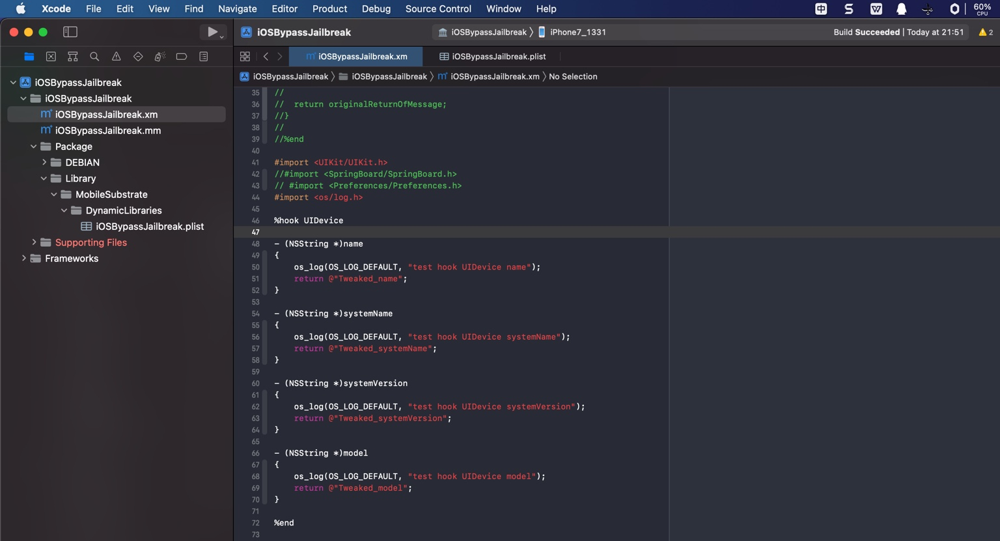

写hook插件代码
iOSOpenDev中的hook插件代码的逻辑是：
.xm：原始的hook插件的代码- 写hook插件，是改动
.xm文件- 而不需要，也不应该改动
.mm文件
- 而不需要，也不应该改动
- 写hook插件，是改动
.mm：从.xm自动（在Build后）自动生成的文件- 后续真正编译的文件是
.mm文件- 可以在
Compiled Sources中看到.mm文件（而不是.xm文件）
- 可以在
- 后续真正编译的文件是
新建iOSOpenDev的项目中的.xm文件（此处是iOSBypassJailbreak.xm）生成的默认代码，来自模板，一般是：
// Logos by Dustin Howett
// See http://iphonedevwiki.net/index.php/Logos
#error iOSOpenDev post-project creation from template requirements (remove these lines after completed) -- \
Link to libsubstrate.dylib: \
(1) go to TARGETS > Build Phases > Link Binary With Libraries and add /opt/iOSOpenDev/lib/libsubstrate.dylib \
(2) remove these lines from *.xm files (not *.mm files as they're automatically generated from *.xm files)
%hook ClassName
+ (id)sharedInstance
{
%log;
return %orig;
}
- (void)messageWithNoReturnAndOneArgument:(id)originalArgument
{
%log;
%orig(originalArgument);
// or, for exmaple, you could use a custom value instead of the original argument: %orig(customValue);
}
- (id)messageWithReturnAndNoArguments
{
%log;
id originalReturnOfMessage = %orig;
// for example, you could modify the original return value before returning it: [SomeOtherClass doSomethingToThisObject:originalReturnOfMessage];
return originalReturnOfMessage;
}
%end
去删除掉，或注释掉，改为自己的hook的代码。
比如此处仅用于演示的代码：

#import <UIKit/UIKit.h>
//#import <SpringBoard/SpringBoard.h>
// #import <Preferences/Preferences.h>
#import <os/log.h>
%hook UIDevice
- (NSString *)name
{
os_log(OS_LOG_DEFAULT, "test hook UIDevice name");
return @"Tweaked_name";
}
- (NSString *)systemName
{
os_log(OS_LOG_DEFAULT, "test hook UIDevice systemName");
return @"Tweaked_systemName";
}
- (NSString *)systemVersion
{
os_log(OS_LOG_DEFAULT, "test hook UIDevice systemVersion");
return @"Tweaked_systemVersion";
}
- (NSString *)model
{
os_log(OS_LOG_DEFAULT, "test hook UIDevice model");
return @"Tweaked_model";
}
%end
附录
iOS中常见的hook网络相关的请求
核心代码：
static char* LastUpdate = "20231025_1524";
#import "HookLogiOS.h"
#import "CrifanLib.h"
/*------------------------------------------------------------------------------
NSURLRequest
------------------------------------------------------------------------------*/
%hook NSURLRequest
+(instancetype)requestWithURL:(NSURL *)URL cachePolicy:(NSURLRequestCachePolicy)cachePolicy timeoutInterval:(NSTimeInterval)timeoutInterval{
iosLogInfo("URL=%{public}@, cachePolicy=%lu, timeoutInterval=%f", URL, (unsigned long)cachePolicy, timeoutInterval);
return %orig;
}
+(instancetype)requestWithURL:(NSURL *)URL{
iosLogInfo("URL=%{public}@", URL);
return %orig;
}
%end
/*------------------------------------------------------------------------------
NSHTTPURLResponse
------------------------------------------------------------------------------*/
%hook NSHTTPURLResponse
-(NSHTTPURLResponse*)initWithURL:(NSURL *)url statusCode:(NSInteger)statusCode HTTPVersion:(NSString *)HTTPVersion headerFields:(NSDictionary<NSString *,NSString *> *)headerFields{
NSHTTPURLResponse* newUrlResp = %orig;
iosLogInfo("url=%{public}@,statusCode=%ld,HTTPVersion=%@,headerFields=%{public}@ -> newUrlResp=%{public}@", url, statusCode, HTTPVersion, headerFields, newUrlResp);
return newUrlResp;
}
-(NSDictionary *)allHeaderFields{
NSURL* curUrl = [self URL];
NSDictionary* allHeader = %orig;
// iosLogInfo("curUrl=%{public}@ : allHeader=%{public}@", curUrl, allHeader);
NSString* respUrlHeaderStr = [NSString stringWithFormat:@"NSHTTPURLResponse:allHeaderFields curUrl=%@ : allHeader=%@", curUrl, allHeader];
logPossibleLargeStr(respUrlHeaderStr);
return allHeader;
}
-(NSInteger)statusCode{
NSURL* curUrl = [self URL];
NSInteger respStatusCode = %orig;
iosLogInfo("respStatusCode=%ld : curUrl=%{public}@", respStatusCode, curUrl);
return respStatusCode;
}
%end
/*==============================================================================
ctor
==============================================================================*/
%ctor {
iosLogInfo("%s: %s", LastUpdate, "HookWhatsApp ctor");
}